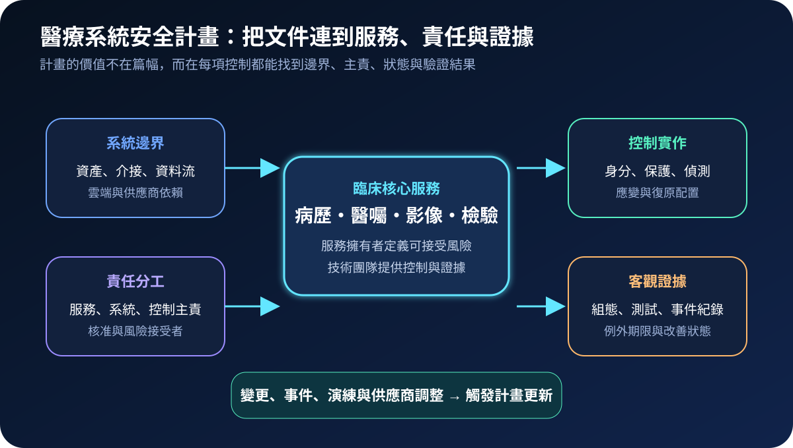
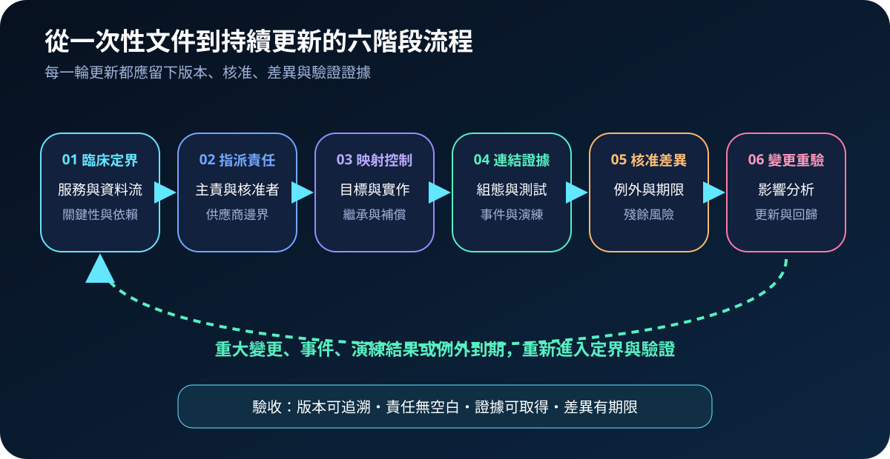
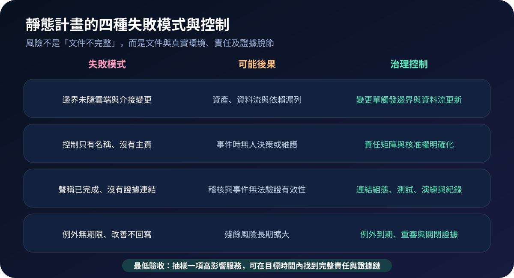

醫療資安國際觀察 · 2026-10-28
醫療系統安全計畫如何避免成為靜態文件：從責任邊界到持續更新
作者：Dr. William｜醫療資訊與資安治理實務工作者
系統安全計畫若只在稽核前更新，容易與真實資產、雲端依賴、供應商責任及臨床風險脫節；可用的計畫必須成為持續更新的責任與證據索引。
名詞解釋：系統安全計畫與持續監控
系統安全計畫用來描述系統邊界、服務目的、資料流、角色責任、控制實作及其相互依賴。持續監控不是只收集告警，而是依風險頻率取得控制狀態、弱點、例外、事件與變更證據。共同控制由院級平台統一提供，例如身分、網路或備份服務；各系統仍須記錄繼承範圍與未涵蓋差異。
國際現況與適用邊界
NIST 於 2026 年 6 月發布 SP 800-18 Revision 2，將安全、隱私與資安供應鏈計畫整合為可持續更新的系統計畫方法，並強調責任、控制實作、共同控制與持續監控。HHS ASPR TRACIE 的醫療體系資安準備資料，則把治理責任、事件應變與醫療服務連續性放在同一脈絡；HHS 405(d) 另提供醫療產業控制實務。這些美國聯邦資料提供方法參考，不直接構成台灣醫療機構的法定文件格式、控制項或核准程序。
台灣適用原則：院內可採用「服務—系統—控制—證據」結構，但法定義務、病歷與個資處理、通報、保存及核准責任，仍須依台灣法令、主管機關要求、契約與院內制度確認。
規劃：先定義服務，再整理文件
範圍宜由高影響臨床服務開始，列出系統與資料流、院級共同控制、外部供應商、控制主責、服務擁有者及風險接受者。每項控制至少連結一種客觀證據，並定義證據擁有者、取得位置、更新頻率、失效門檻與例外期限。驗收指標可包含邊界覆蓋率、無主控制數、逾期例外數、證據取得時間、重大變更後更新時間及抽樣控制通過率。
實作：六階段建立活的治理基線
- 臨床定界：確認服務、關鍵資料、系統、介接及停機影響。
- 指派責任：區分服務、系統、共同控制、供應商與核准角色。
- 映射控制：記錄控制目標、實作位置、繼承範圍及補償措施。
- 連結證據：連到組態、測試、演練、事件及改善紀錄。
- 核准差異：對例外設定風險、期限、主責與重審條件。
- 變更重驗：重大變更、事件或演練後執行影響分析與臨床回歸。

風險：文件完整不代表控制有效
常見失敗包括邊界未隨雲端與介接更新、控制沒有明確主責、完成聲明沒有證據連結，以及例外沒有期限。控制方法是把變更流程接到計畫更新、建立責任矩陣、限制以可取得證據宣稱完成，並對逾期例外自動升級。若院級共同控制失效，各系統不得仍以「已繼承」視為風險已處理。

可執行清單
- 高影響臨床服務是否能對應完整系統、介接、資料流與供應商依賴？
- 每項控制是否有主責、代理人、核准者及可取得的驗證證據？
- 共同控制的繼承範圍與未涵蓋差異是否明確？
- 重大變更、事件與演練是否會觸發影響分析及版本更新？
- 例外是否有期限、補償措施、重審條件與關閉證據？
- 抽樣一項服務時，是否能在目標時間內重建責任與控制狀態？
來源
- NIST｜SP 800-18 Revision 2: Developing Security, Privacy, and Cybersecurity Supply Chain Risk Management Plans for Systems（發布：2026-06-30；查閱：2026-10-28）
- HHS ASPR TRACIE｜Healthcare System Cybersecurity Readiness and Response Considerations（更新：2022-10；查閱：2026-10-28）
- HHS 405(d)｜Health Industry Cybersecurity Practices 2023（發布：2023；查閱：2026-10-28）
內容說明
本文依健康台灣深耕計畫相關治理內容整理，並參考 NIST 與 HHS 公開資料，提出醫療系統安全計畫的邊界、責任、控制、證據、例外與持續更新方法；不把美國聯邦文件視為台灣法定義務，也不取代主管機關公告、院內病歷與個資程序、風險核准制度或法律意見。